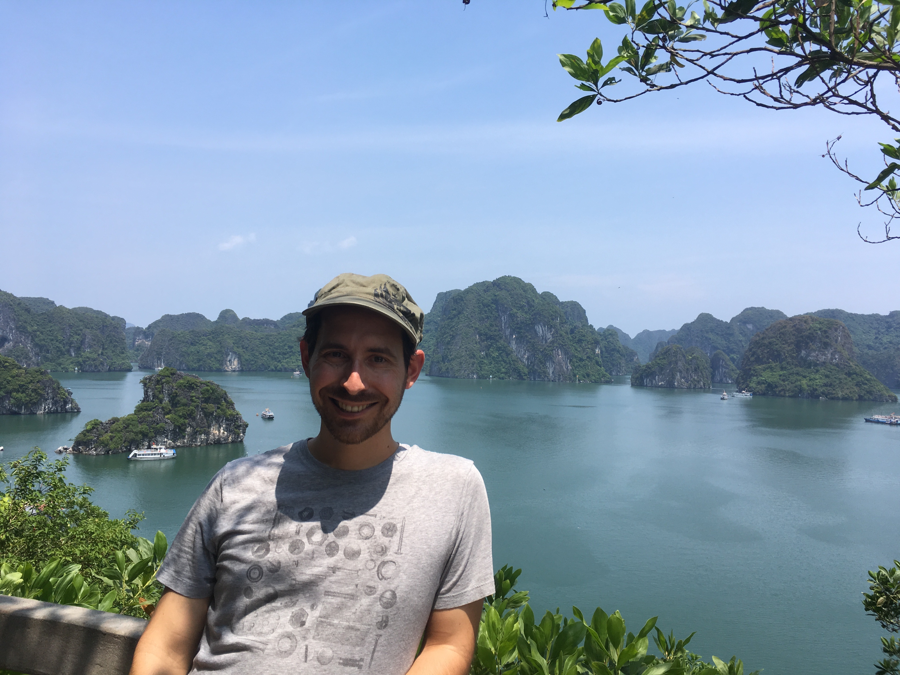

<h2>Welcome to David Li-Bland's blog!</h2>

I'm a mathematician with research interests in machine learning and a
background in mathematical physics.
<div>
    
</div>

<h3>Recent Blog Posts</h3>
$partial("templates/post-list.html")$

<h3>Documents</h3>
<a href="./static/pdfs/cv2018.pdf">Curriculum Vitae</a>

<h3>Contact</h3>
<script type="text/javascript">
    //<![CDATA[
    GoFish=new Array();
    GoFish[0]="%3c%61%20%68%72%"+"65%66%3d%22%6d%61%69%6c%74%6f%3a%64%61%";
    GoFish[1]="76%69%64%2e%6c%69%62%6c%61%6e%64%40%67%6d%61%69%6c%2e%"+"63%6f%6d%22%3e%64%61%76%69%64%2e%6c%69%62%6c%";
    GoFish[2]="61%"+"6e%64";
    GoFish[3]="%40%"+"67%6d%61%69%6";
    GoFish[4]="c%2e%63%"+"6f%6d%3c%2f%61%3e";
    OutString="";
    for (j=0;j<GoFish.length;j++){
        OutString+=GoFish[j];
    }document.write(unescape(OutString));
    //]]>
</script>
<noscript>Sorry, you need to enable JavaScript to email me.</noscript>

<!--<p>…or you can find more in the <a href="/archive.html">archives</a>.</p>-->
